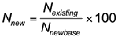

A simple price index expresses the price of an item at time i as a percentage of the item's price at a base time.
Spot price of European Brent Oil
Changing the base year
In practice the base year is revised from time to time so that comparisons can be made with a recent (i.e. not ancient) price value. For example the quarterly New Zealand Consumers Price Index has a current base of June 2006. Converting an existing index to a new base is quite straightforward:

Here “new” refers to the index using the new base, “existing” refers to the index using the existing base, and “newbase” refers to the index for the new base year using the existing base year.
Spot price of European Brent Oil